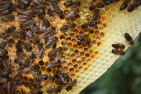

Om de leefomstandigheden van de bij te verbeteren is er vanaf nu een nieuwe digitale tool beschikbaar : boeren, maar ook burgers,
kunnen nagaan hoe het met het voedselaanbod voor bijen in hun omgeving is gesteld op de site
www.drachtkalender.nl. Tips om tekorten in nectar of stuifmeel aan te vullen,
en daarmee de leefomstandigheden voor de bij te verbeteren, biedt de site ook.
Het belang van bijen wordt door steeds meer boeren en burgers onderkend. Bijen, zowel honing- als wilde bijen hebben stuifmeel en nectar nodig
voor bestuiving en bevruchting van voedselgewassen (zoals bv. appel, aardbei en pompoen). Verder zorgen bijen voor kruisbestuiving in de natuur
en biodiversiteit in het landschap. Het gebruik van insecticiden in de landbouw, luchtvervuiling en onvoldoende voedselaanbod in de vorm van
stuifmeel en nectar bedreigen de bij. Kennis over het voedselaanbod voor deze nuttige insecten is dus relevant.
Deze site is gebouwd in opdracht van het Louis Bolk instituut. Boki Luske, onderzoeker en specialist op gebied van bestuivende insectensoorten
heeft haar kennis over planten en biotopen verzameld in excel rekenmodellen en aan de hand daarvan werd een online applicatie gebouwd.